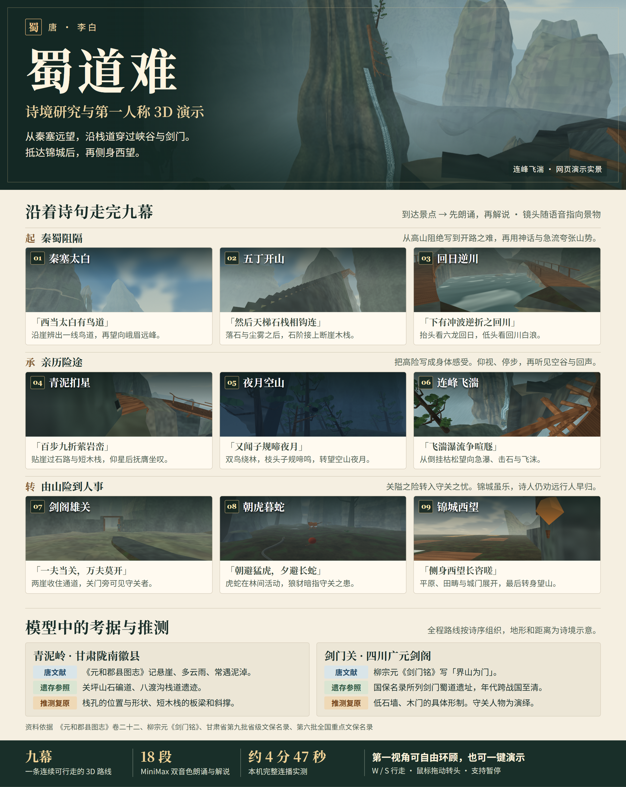

青泥岭
- 唐文献
- 《元和郡县图志》记崖险多雨、行人遇泥淖。
- 遗存参照
- 关坪山石碥道与八渡沟栈道遗迹。
- 推测复原
- 栈孔孔位、孔形与短木栈的板梁、斜撑。
唐 · 李白
站上栈道，低头看脚下的木板，转身望向峡谷。走到诗中的地点，先听原诗，再听眼前地形与诗意的解说。

将秦塞太白到锦城西望的九幕连成可行走的 3D 路线。可停步、自由转头、切换全景或一键演示。到达景点先听诗人朗诵，随后听旁白解说，字幕和镜头随语句指向景物。
鸟道是一条可辨认的窄岩沿。抚膺坐叹时，视点坐低，手臂收向胸前。「万壑雷」一幕可以看见急瀑、击石、飞沫和雾气。
先找到旅人的站位和脚下通路，再用近处的栈板、绝壁与远峰建立高低落差。操作、镜头和语音一起引导理解：五丁开山写开路之难，青泥与飞湍写亲历之险，剑门转到守关人事，锦城收在劝归与回望。
手动游览可以留在现场继续看，完整演示以短转场压缩长路。两种节奏都使用同一套 3D 场景和语音。
把读者容易一带而过的景物和动作变成可停留、可观察的空间。朗诵负责传达诗的节奏，旁白解释眼前所见，史料标注让观众判断画面依据。这套从诗句到场景的做法可复用于古诗教学展示、史地导览和文化展陈原型。
已有本机全程播放和交互验证。真实教学收益有待读者体验验证。
九幕按诗序组织，相对位置、距离与传说人物均按诗境编排。